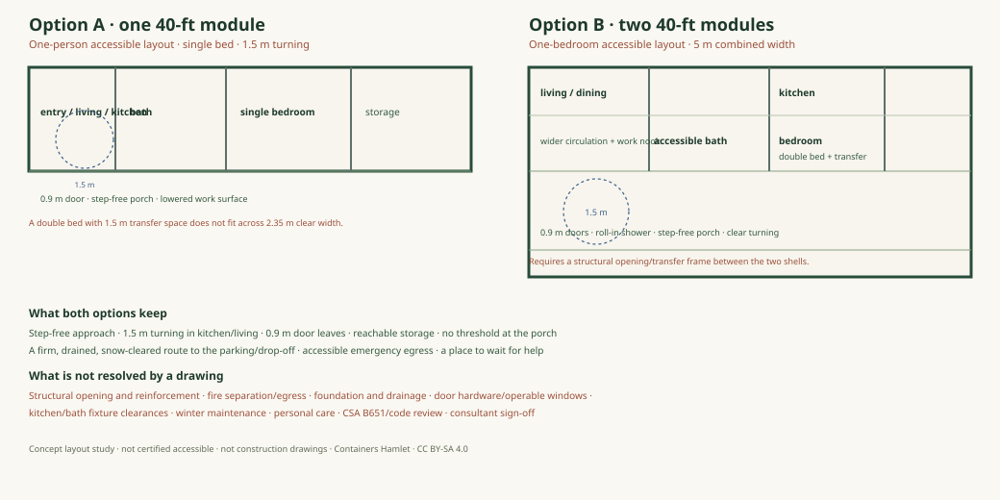

Layout study · not a seventh home
Cedar Accessible: two honest options
The current compact homes do not provide accessible bathrooms or a 1.5 m turning circle. This study tests what a redesigned Cedar could do. The single-container version can work for one person with a single bed; a double bed with proper transfer space needs the two-container version.
Not certified accessible. These are concept plans, not construction drawings or a code/CSA B651 assessment. Structural, fire, egress, fixture, winter-path and personal-care questions remain. Confirm with an accessibility consultant, engineer and building official.
The two options
- Option A · one 40-ft module: one-person layout with a single bed and 1.5 m transfer side.
- Option B · two 40-ft modules: one-bedroom layout with a double bed and proper transfer space.

| Requirement | One 40-ft module | Two 40-ft modules |
|---|---|---|
| Step-free approach | Graded trail/porch; firm, drained, snow-cleared route | Same, with a wider arrival and more turning space |
| 1.5 m turning | Kitchen/living and bathroom; not the single-bedroom transfer side | Kitchen/living, bathroom and bedroom |
| Bed | Single bed with a 1.5 m transfer side | Double bed with transfer space |
| Bathroom | Full-width roll-in shower, toilet, vanity; exact clearances need testing | Larger bathroom with a more credible 1.5 m circle |
| Doors | 0.9 m leaves; threshold detail unresolved | 0.9 m leaves; wider internal route possible |
| Storage | Reachable storage only; no ladder storage | More reachable storage and a work/guest nook |
| Footprint | One module, ~36 m² footprint | Two modules, ~66 m² footprint plus porch |
| Main risk | A single bed may not suit a couple or a carer staying over | Structural opening between shells, fire separation and cost |
What changed from the current Cedar
- Bathroom moved to a full-width 2.3 m bay with a roll-in shower and a credible 1.5 m circle.
- Doors widened to a 0.9 m target leaf; thresholds and hardware still need design.
- Kitchen work surface lowered with knee space; storage kept in the 0.4–1.2 m reach band.
- Step-free porch and a firm, drained trail; no long timber ramp.
- Single-level sleeping and living; no ladder or step to the bedroom.
- A clear place to wait for help and an accessible emergency exit.
The current Cedar page remains the base 40-foot home. This page does not replace it or place a seventh building on the hamlet map.
What still needs professional work
- Structural opening, transfer frame and reinforcement between two containers.
- Fire separation, protected egress and emergency evacuation from both options.
- Foundation, drainage, frost and a firm winter route.
- Fixture-by-fixture clearances, door swings, operable windows and controls.
- Personal care, overnight support and aging in place — layout alone does not provide care.
- CSA B651, Ontario Building Code and local accessibility review.
Read the practical accessibility notes and the base Cedar page.